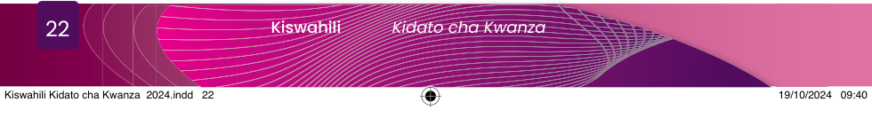

Kusimulia habari kwa kuzingatia mkazo

Soma kifungu cha habari kifuatacho, kisha isimulie na kujibu maswali yanayofuata.
Mwenyekiti wa Kijiji cha Tushikamane aliitisha mkutano kwa wanakijiji kuhusu maendeleo ya kijiji chao. Lengo la mkutano huo ni kuwahabarisha wanakijiji namna ya kufanikisha mipango mbalimbali ya maendeleo kijijini hapo.
Alianza kwa kuwashukuru wanakijiji kwa kuhudhuria mkutano huo. Kisha, alitoa ufafanuzi juu ya ujenzi wa baraˈbara na ulipiaji wa nguzo za umeme kwa ajili ya kuleta umeme katika kijiji chao. Aidha, alitoa mapendekezo kuhusu namna bora ya kufanikisha mipango ya maendeleo kijijini hapo kwa kuishauri kila kaya ichangie kiasi cha shilingi elfu kumi. Alisema kuwa bila kufanya hivyo tutashindwa kufanikiwa.
Baada ya mapendekezo ya mwenyekiti, baadhi ya wajumbe walishauri kila mtu achangie anachoweza kulingana na uwezo wa kila kaya ili waweze kwenda pamoja.
Baada ya wajumbe kutoa ushauri, mwenyekiti aliendelea kwa kusema, “Walaˈkini kila mmoja akiwa na kiwango chake, hatutafanikiwa kwa haraka.” Mmoja wa wajumbe alidakia, “ˈSawasawa mwenyekiti; sote tutoe sawaˈsawa. Nina waˈlakini kuwa tukiruhusu kila kaya itoe kulingana na uwezo wake hatutafanikisha lengo.” “Baˈrabara, umesema vyema,” mmoja wa wajumbe alisikika akisema. Baada ya mazungumzo hayo, mwenyekiti aliwashukuru wajumbe na kuwaeleza kuwa maoni yote ameyachukua na kwamba atayafanyia kazi.
Maswali
